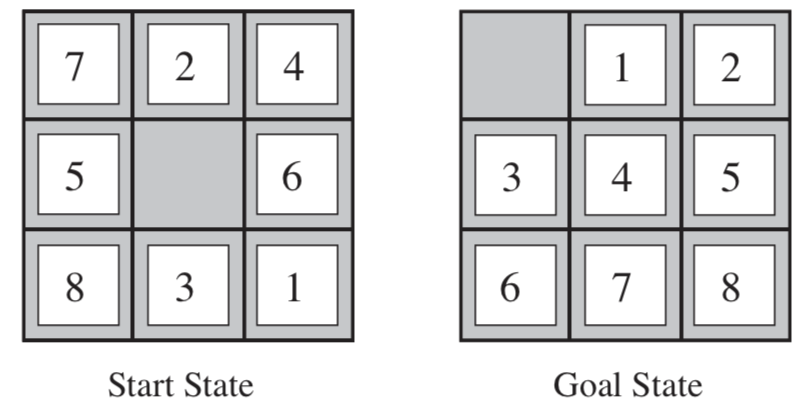

--Stay hungry, stay foolish.
--Forever young, forever weep.
八数码问题也称为九宫问题。在3×3的棋盘，摆有八个棋子，每个棋子上标有1至8的某一数字，不同棋子上标的数字不相同。棋盘上还有一个空格，与空格相邻的棋子可以移到空格中。要求解决的问题是：给出一个初始状态和一个目标状态，找出一种从初始转变成目标状态的移动棋子步数最少的移动步骤。

一个随机产生的八数码问题的平均解步数为22。
构建 8 数码问题的模型为：
import copy class EightDight: opt = {'U':(-1,0), 'D':(1,0),'L':(0,-1), 'R':(0,1)} def __init__(self, init_state, final_state=None): if final_state == None: final_state = [[0,1,2], [3,4,5], [6,7,8]] self.final = final_state self.state = copy.deepcopy(init_state) @property def state(self): return self._state @state.setter def state(self, state): self._state = copy.deepcopy(state) for i in range(3): for j in range(3): if self.state[i][j]==0: self.zero_pos = (i, j) return def judge_opt(self, opt): """Judge opt is valid or not """ future_pos = (self.zero_pos[0]+self.opt[opt][0], self.zero_pos[1]+self.opt[opt][1]) return all(0<=i<3 for i in future_pos) def get_valid_opts(self): return [o for o in self.opt if self.judge_opt(o)] def operator(self, opts): for opt in opts: opt = str.upper(opt) if self.judge_opt(opt)==False: return p_f = (self.zero_pos[0]+self.opt[opt][0], self.zero_pos[1]+self.opt[opt][1]) p_z = self.zero_pos self.state[p_z[0]][p_z[1]]=self.state[p_f[0]][p_f[1]] self.state[p_f[0]][p_f[1]]=0 self.zero_pos = p_f def __str__(self): s = [] for i in self.state: s.append(' '.join(str(n) for n in i)) return '\n'.join(s)+'\n' def __iter__(self): for i in self.state: yield tuple(i) init_state = [[7,2,4],[5,0,6],[8,3,1]] e = EightDight(init_state) print(e) print(e.get_valid_opts(), '\n') e.operator('U') print(e)
测试结果：
7 2 4
5 0 6
8 3 1
['U', 'D', 'L', 'R']
7 0 4
5 2 6
8 3 1
不记录重复状态，为了节省内存空间，程序记录的是操作步骤而不是状态。因此，每次为了得到某个状态，必须用记录的步骤执行操作过程。代码如下：
def BFS_1(init_state): """ 记录的是操作步骤，每次迭代时需要重新计算当前状态 """ from collections import deque e = EightDight(init_state) frontier = deque([""]) while True: cur_opts = frontier.popleft() e.state = init_state e.operator(cur_opts) if e.state==e.final: break for sub_opt in e.get_valid_opts(): frontier.append(cur_opts+sub_opt) return cur_opts
进过测试，该代码非常费时，而且在操作序列很长时，空间也并没有减少多少。关键是没有记录重复状态，因此该搜索是树搜索而非图搜索，这也是费时的最大原因。
记录状态，使得树搜索变为图搜索，大大又花了时间复杂度和空间复杂度：
def BFS_2(init_state): """ 记录的是操作步骤，每次迭代时需要重新计算当前状态 """ from collections import deque e = EightDight(init_state) frontier = deque([""]) explored = set([tuple(e)]) best_actions = None while best_actions==None and len(frontier): cur_opts = frontier.popleft() e.state = init_state e.operator(cur_opts) if e.state==e.final: best_actions = cur_opts break cur_state = e.state for sub_opt in e.get_valid_opts(): e.state = cur_state e.operator(sub_opt) if e.final==e.state: best_actions = cur_opts + sub_opt break if tuple(e) not in explored: explored.add(tuple(e)) frontier.append(cur_opts+sub_opt) return best_actions init_state = [[7,2,4],[5,0,6],[8,3,1]] BFS_2(init_state)
求得的结果为：'LURDDLURRULLDRRDLURULDDLUU'
所用时间为：
CPU times: user 16.5 s, sys: 68.8 ms, total: 16.5 s
Wall time: 16.6 s
A*、贪婪算法其实和BFS、DFS、Uniform Cost Search算法都类似，就是对 frontier 数组的排序不同：
frontier 使用队列，即FIFO，即为BFSfrontier 使用堆栈，即FILO，即为DFSfrontier 使用统一的代价估计，并最先弹出其中最小的代价状态，即为UCSfrontier 的排序自定义，使用启发式函数 f = g + h，其中 g 表示到当前状态所用的“距离”，h 表示估计到目标的距离，为了找到最优解，h 需要满足可采纳性和一致性
g 取实际所用距离，h = (到达目标状态?)0:1：变形为为BFSg ≡ 0，h 满足一致性和可采纳性：贪婪算法g 取实际使用距离，h 满足一致性和可采纳性：A* 算法g ≡ 0，h = (到达目标状态?)0:1：变形为DFS/BFS（根据f相等时，前插入则为DFS，后插入则为BFS）可见 BFS 为 A* 的一种特殊情况而已。
下面为 8数字问题对应的 A* 的算法：
def heuristic_framework(init_state, heuristic): from collections import namedtuple, deque Record = namedtuple('Record', 'actions h_cost') e = EightDight(init_state) frontier = deque([Record('', e.heuristic_cost(heuristic))]) best_actions =None explored = set([tuple(e)]) while len(frontier) and best_actions==None: cur_opts = frontier.popleft() if cur_opts.h_cost==0: best_actions = cur_opts.actions break e.state = init_state e.operator(cur_opts.actions) tp_state = e.state for opt in e.get_valid_opts(): e.state = tp_state e.operator(opt) if tuple(e) in explored: continue explored.add(tuple(e)) h_cost = e.heuristic_cost(heuristic) tp_record = Record(cur_opts.actions+opt, h_cost) if h_cost==0: best_actions = tp_record.actions break cur_f = len(tp_record.actions)+tp_record.h_cost left,right = 0, len(frontier)-1 # 使用二分查找，大大加快查询插入位置的速度 while left<=right: mid = (left+right)//2 if len(frontier[mid].actions)+frontier[mid].h_cost < cur_f: left = mid+1 else: right = mid-1 frontier.insert(left, tp_record) return best_actions
该函数需要传入一个启发式函数。
启发式函数为 h = (到达目标状态?)0:1：
def heuristic_arrive(cur_state, final_state): return int(not cur_state==final_state) %time heuristic_framework(init_state, heuristic_arrive)
结果为：
CPU times: user 19 s, sys: 94 ms, total: 19.1 s
Wall time: 19.1 s
[out] : 'LURDRDLLURRDLLURRULLDRRULL'
A* 变形的 BFS 比真实的BFS要稍稍慢一点，因为需要寻找插入位置，结果满足最优性。
def heuristic_diff(cur_state, final_state): """ 使用棋子不在其位的个数作为启发式函数 """ h_cost = 0 for r1, r2 in zip(cur_state, final_state): for c1, c2 in zip(r1, r2): h_cost += int(c1!=c2) return h_cost %time heuristic_framework(init_state, heuristic_diff)
结果为：
CPU times: user 4.13 s, sys: 8.13 ms, total: 4.14 s
Wall time: 4.15 s
[out] : 'LURDDLURRULLDRRDLURULDDLUU'
可以发现，比BFS快了3倍，效果非常不错。结果满足最优性。
def heuristic_Manhattan(cur_state, final_state): """ 使用棋子的曼哈顿距离作为启发式函数 """ cur_pos = [0]*9 final_pos = [0]*9 for i in range(3): for j in range(3): cur_pos[cur_state[i][j]] = (i, j) final_pos[final_state[i][j]] = (i, j) h_cost = 0 for p1, p2 in zip(cur_pos, final_pos): h_cost += abs(p1[0]-p2[0])+abs(p1[1]-p2[1]) return h_cost %time heuristic_framework(init_state, heuristic_Manhattan)
结果为：
CPU times: user 351 ms, sys: 3.44 ms, total: 354 ms
Wall time: 364 ms
[out] : 'LURDRDLLURRDLLURRULLDRRULL'
只花了半秒钟不到，性能与BFS相比整整提高了40多倍，与使用不正确的数字作为启发式函数相比提高了13倍！并且结果满足最优性。
可见选择合适的启发式函数对于寻找问题的解影响非常大。